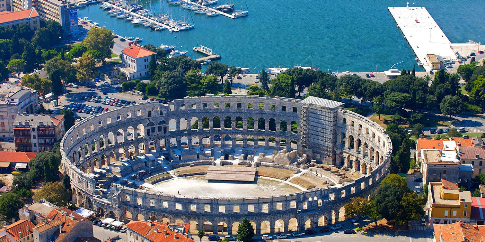

Пула — один из самых северных курортов Хорватии, расположенный на юго-западе хорватской области Истрия.
Древние предания гласят, что этот город основали аргонавты, когда держали путь за золотым руном.
Благодаря многовековой истории, город приобрел богатый архитектурный облик, а у его жителей сложились определенные культурные традиции.
Не всем нравится древний город Пула, однако равнодушно к нему относиться невозможно. Многие туристы просто в восторге от этого курорта.
Удивительно чистые воды местных пляжей и прибрежные сосновые леса создают прекрасные условия для оздоровления и отдыха на берегах Пулы.
Однако, отправляясь сюда, следует знать, что традиционных песчаных пляжей вы не встретите.
Пляжи здесь в основном каменистые или бетонные со специально оборудованными входами в воду. Во многих бухтах встречаются каменисто-галечные пляжи.
В районе Медулина, где находится большинство отелей, тоже встречаются пляжи из гальки. Кроме того, здесь есть и нудистские пляжи.
Достопримечательности
Первое, что бросается в глаза, когда приезжаешь в город – крупнейший древнеримский амфитеатр, являющийся главной достопримечательностью Пулы.
Громадное овальное сооружение когда-то вмещало до двадцати тысяч зрителей. В древнеримскую эпоху в нем проводились гладиаторские бои, а в более поздние времена - рыцарские турниры.
Известняк, из которого построен амфитеатр, прекрасно сохранился. До сих пор здесь проводятся оперные концерты, различные шоу и представления.
В подземелье под амфитеатром находится музей, где экспонируются археологические находки, обнаруженные здесь.
Еще один археологический музей расположен в старом римском городе.
В музее выставлены предметы, обнаруженные во время археологических раскопок на территории Истры.
Большая часть коллекции представлена периодом II–VI веков.
В венецианской крепости XVII века расположен Исторический Морской Музей.
Замок представляет собой каменное строение в виде звезды с бастионами, предназначенными для защиты от атак с моря.
В музее собраны уникальные экспонаты из истории мореходства, оружие, карты, монеты, гербы и различные документы.
Интересные исторические памятники можно увидеть на островах Бриуны, которые отделены от города проливом Фажана.
Здесь находятся римский дворец, древний храм Венеры, церковь св. Марии и церковь св. Германа.
Эта группа островов считается шикарным курортом, который основал австрийский стальной магнат – бывший владелец архипелага.
На островах сейчас расположен национальный природный парк, в котором преобладают субтропические растения: олеандры, эвкалипты, средиземноморские дубы, пинии, кедры, лавры.
Прекрасный пляж находится на острове Crveni Otok, до которого можно добраться на рейсовом катере за четверть часа.
Чистые, уютные бухты острова окружены сосновыми лесами.
Галечный и скалистый пляж острова оборудован душевыми кабинками. Здесь имеется площадка для игры в волейбол и ресторан.
В Пуле и ее окрестностях сама природа создала прекрасные возможности для занятий дайвингом. Один из популярных дайв-сайтов находится на островах Бриуны.
В водах архипелага обитают редкие морские жители. Здесь встречаются черепахи, дельфины, морские ежи и различные виды рыб – кефаль, зубан, дорада, камбала, угорь, темный горбыль, бранцин. На юго-западном берегу, в районе мыса Пенеда, находятся глубокие пещеры и туннели с интересным подводным миром.
В районе Пулы есть несколько затонувших суден, которые представляют интерес для дайверов. Известный затонувший корабль «Барон Гош» подорвался когда-то в бухте на австрийской мине. Он залегает на глубине 28-42 метра.